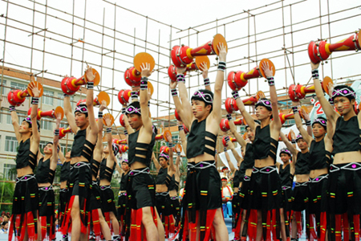
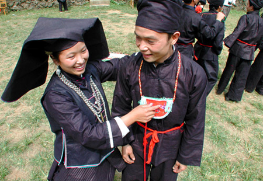
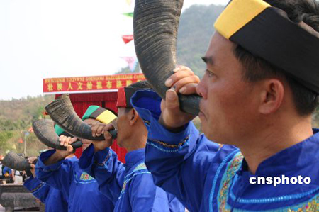
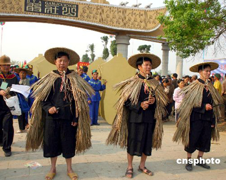

壮族是中国少数民族中人口较多的一个民族，有人口15489630人。广西壮族自治区是他们的主要聚居地。此外，广东、贵州、云南、湖南等省也有分布。
壮族聚居区地处岭南西部，地形奇特，山青水秀，自然景观十分美丽。这里气候温和，雨量充沛，多热带、亚热带作物。农产品有水稻、玉米、薯类等。三七、蛤蚧和茴油，是壮族地区素负盛名的特产。壮族，是岭南的土著民族。有“布壮”、“布土”、“布侬”、“布曼”、“布雅依”等20余种自称。新中国成立后，统称“僮族”。后来改为“壮族”。
壮族有本民族的语言文字。壮语属汉藏语系壮侗语傣语支。古文字是“模仿”汉字《六书》的造字法而创造的一种与壮语语音一致的“方块壮字”。20 世纪50年代，根据壮族人民的要求，创制了一种全民族能够接受以拼音字母为基础的壮字。目前仍在推广使用。
“三月三”与歌圩
美丽富饶的壮乡，素有“歌海”的美誉。尤其是盛大的“三月三”，方圆数十里的男女青年，都兴高彩烈地穿上节日盛装赶来参加，少者几百人，多达数千人或上万人。顿时，人山人海，歌声嘹亮，成了歌的海洋。
三月三是壮族人民的传统节日，对歌又是三月三的一项主要活动，因此又称“歌圩”或“歌节”。
歌圩，是壮族民间传统文化活动的，也是男女青年进行社交的场所。在壮语中被称作“窝墩”、“窝岩”，意为“出野外玩耍”。由于这种活动相互酬唱，彼此对歌，所以古代人之为“墩圩”。


壮族歌圩，在长期发展的过程中有着许多动人的传说。其中比较流行的是“赛歌择婿”的故事。传说在以前，有位壮族老歌手的闺女长的十分美丽，又很会唱山歌，老人希望挑选一位歌才出众的青年为婿。各地青年歌手纷纷赶来，赛歌求婚，从此就形成了定期的赛歌集会。
不过，据古代文献的记载，歌圩早在宋代就已经流行。南宋周去非的《岭外代答》载，壮人“迭相歌和，含情凄婉，皆临机自撰，不肯蹈袭，其间乃有绝佳者。”这里所说的就是男女青年聚会的歌圩。到了明代歌圩又有了发展，并定期在固定地点举行。
壮族歌圩有大有小，各地不一。不过，农历三月三最为隆重。搭彩棚、摆歌台、抛彩球、择佳偶，别有风情。在歌圩上，各村屯的男女青年，各自三五或群，寻找别村的青年，集体对唱山歌。通常由男青年主动先唱“游览歌”，观察物色对手；遇有比较合适的对象，便唱“见面歌”和“邀请歌”；得到女方答应，就唱“询问歌”；彼此互相了解，便唱“爱慕歌”、“交情歌”；分别时则唱“送别歌”，歌词随编随唱，比喻贴切，亲切感人，青年男女经过对歌后接触，建立一定感情，相约下次歌圩再会。
歌圩上，除对歌外，还举行丰富多彩的游戏活动。有精采的抛绣球，有趣的碰红蛋，热闹的放花炮，以及演出群众喜闻乐见的壮戏等。
祭奠始祖布洛陀
广西田阳被认为是壮族人文始祖布洛陀的发祥地，敢壮山则是布洛陀文化圣山。根据民间传说，农历二月十九是布洛陀的生日，历史上的壮族群众从这一天开始到农历三月初九都会自发前往敢壮山祭奉，前来拜祭的壮族群众要唱山歌，久而久之，便形成了广西最古老、规模最大的歌圩，三月三歌圩也包含其中。